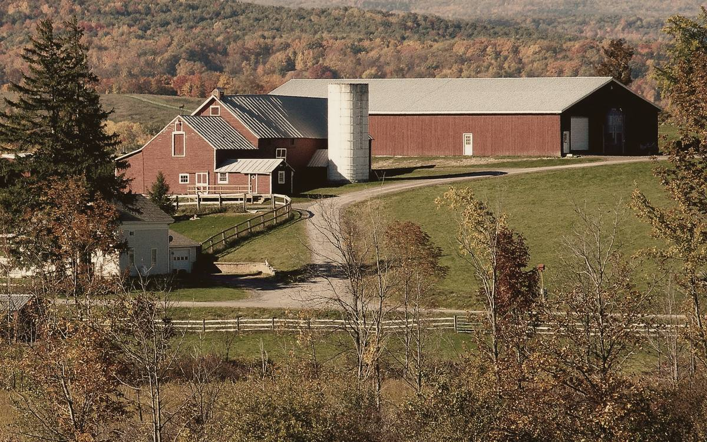

Plate IV.A farmhouse and barns in October
Since 1965, close to home.
A small nonprofit in Farmington, New Hampshire, recognized by the IRS as tax-exempt in 1965. It helps animals by helping the people who care for them.
The years, ring by ring.
The Society's public record is a short one, and that suits it. These are the dates on file.
Dates come from the IRS record of the Society's exemption and the returns listed in ProPublica's Nonprofit Explorer. Count the rings on the almanac page.
- 1965
April 1965. The IRS issues the Society's tax exemption as a 501(c)(3) organization.
- 2001
The earliest annual returns listed: Form 990 for 2001, 2003 and 2006.
- 2013
Form 990-N, the short e-Postcard, with gross receipts under $50,000.
- 2014
A Form 990 return, with income from investments.
- 2015
From 2015 the Society files Form 990-PF, the annual return for private foundations.
- 2026
April 21, 2026. The Form 990-PF for the year to December 2025 is filed.
What the Society is for.
As its IRS filings describe it, the Society helps animals in Strafford County by helping the people who care for them.
- Small grants for vet billsmostly toward veterinary bills for people who cannot afford care
- Support grants to local rescuesfor the groups doing the hands-on work
- Spay and neuterfunding so the cost is less of a hurdle
- Medical carealongside the help with vet bills
- Foodthe basics of good care
- Humane educationkindness to animals, passed on
Plate IX.Brick mills along the river
Where it works
Strafford County.
The Society is based in Farmington, in Strafford County, New Hampshire, and it works for the people of the county and the animals they love.
The IRS record.
The Society is a 501(c)(3) tax-exempt organization, classified by the IRS as a private foundation.
How it is run
As a private foundation, the Society files a Form 990-PF with the IRS each year. The return is public. It sets out the Society's income, its grants and its investments, and lists its officers and directors. The return for 2025 reports no compensation paid to officers.
Grants are decided by the Society. This website does not name the people who run it; their names are in the public return.
Read the returns on ProPublica Nonprofit Explorer (opens in a new tab)
- Name
- Strafford County Animal Protection Society
- EIN
- 02-6013420
- Status
- 501(c)(3) tax-exempt
- Classified as
- Private foundation
- Exempt since
- April 1965, by IRS ruling
- Annual return
- Form 990-PF
- Category
- Animal protection and welfare
- Address
- 122 Cocheco Rd, Farmington, NH 03835
Where the money goes.
From the Society's Form 990-PF for the tax year ending December 2025, as published by ProPublica.
Revenue
$34,233
mostly from investments
Charitable disbursements
$29,074
paid out for its purposes
Total expenses
$31,190
including disbursements
Net assets
$638,250
at the end of 2025
Where the 2025 income came from
- Dividends: $18,648
- Gains on sales of assets: $14,562
- Gifts received: $1,023
In 2025 almost all of the Society's income came from its investments. Gifts were $1,023 of the $34,233.
| Year | Revenue | Disbursed | Disbursed, drawn to scale |
|---|---|---|---|
| 2025 | $34,233 | $29,074 | |
| 2024 | $32,843 | $28,053 | |
| 2023 | $22,286 | $27,460 | |
| 2022 | $24,972 | $28,789 | |
| 2021 | $36,101 | $23,189 | |
| 2020 | $31,320 | $26,818 | |
| 2019 | $43,082 | $24,313 |
Figures for 2016 to 2018 are not extracted in ProPublica's summary; the returns themselves are listed there. In 2022 and 2023 the Society paid out more than it took in.
Check it yourself: ProPublica Nonprofit Explorer, EIN 02-6013420 (opens in a new tab) · IRS Tax Exempt Organization Search (opens in a new tab), search for EIN 02-6013420.